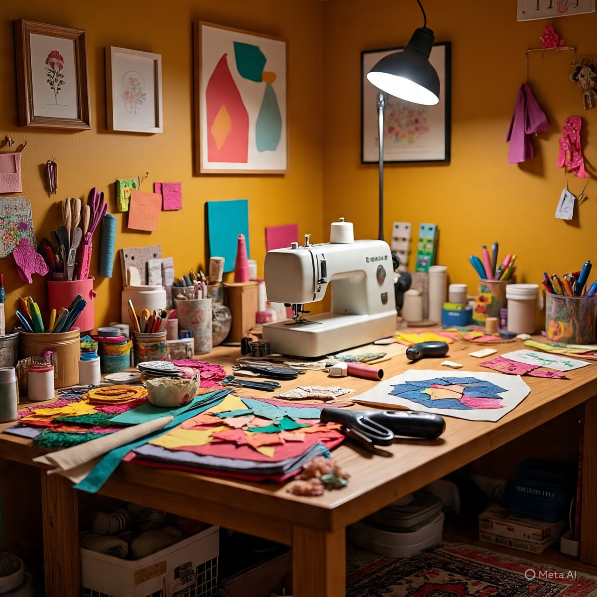

CRAFT
Meaning of Craft
Craft is the use of hands and simple tools to create objects that are useful or decorative. It is a form of creative expression that involves designing and producing items by hand.

These items may be used in the home, at work, or for personal use. Some are also used for traditional ceremonies or sold for money.
Crafts are usually made from materials that are available in the local environment such as clay, wood, paper, cloth, beads, raffia, calabash, and metal.
Types of Crafts
- Paper craft – This involves using paper to make items like greeting cards, paper flowers, and envelopes.
- Textile craft – This includes tie and dye, sewing, and embroidery.
- Beadwork – This is the use of beads to make necklaces, bags, belts, and other ornaments.
- Raffia craft – This involves weaving with raffia to make baskets, mats, hats, and bags.
- Clay craft – This includes making pots, plates, and other household items from clay.
- Wood craft – This is the carving or shaping of wood to produce items like walking sticks, stools, and kitchen tools.
- Calabash decoration – This involves carving, painting, or burning designs onto calabashes.
- Metal craft – This includes creating items from metal such as jewelry, keys, and tools.
Materials Used in Craft
- Paper
- Cloth.
- Beads.
- Raffia.
- Thread.
- Dye.
- Glue.
- Clay.
- Calabash.
- Wood.
- Metal
Tools Used in Craft
- Scissors.
- Needles.
- Brushes.
- Knives.
- Files
- Pliers.
Uses of Craft
- Craft items are used in the home (e.g. mats, baskets).
- They are used for decoration (e.g. wall hangings, beads).
- They are used for traditional ceremonies (e.g. carved masks).
- They serve as a source of income.
- They help in preserving our culture.
Care and Safety in Craft Work
- Handle sharp tools like knives and scissors carefully.
- Keep your working area clean and well-organized.
- Wash hands after using glue, dye, or clay.
- Store materials and tools properly after use.
Benefits of Learning Craft
- It helps students develop their talents and creativity.
- It can be used to start small-scale businesses.
- It teaches patience and discipline.
- It promotes cultural knowledge and heritage.
- It provides job opportunities in the future.
Examples of Craft
- Paper Craft Examples : Greeting cards, Paper flowers, Paper bags, Envelopes.
- Textile Craft Examples : Tie and dye cloth, Embroidered handkerchiefs, Sewn aprons, Table cloths.
- Beadwork Examples : Beaded necklaces, Beaded belts, Beaded handbags, Beaded earrings.
- Raffia Craft Examples : Raffia baskets, Raffia mats, Raffia hats, Raffia fans.
- Clay Craft Examples : Clay pots, Clay plates, Clay animal figures, Clay cups.
- Wood Craft Examples : Carved stools, Walking sticks, Mortar and pestle, Carved masks.
- Calabash Craft Examples : Painted calabash bowls, Decorated calabash gourds, Carved calabash drums.
- Metal Craft Examples : Metal key holders, Metal bangles, Cooking pots, Local iron knives.